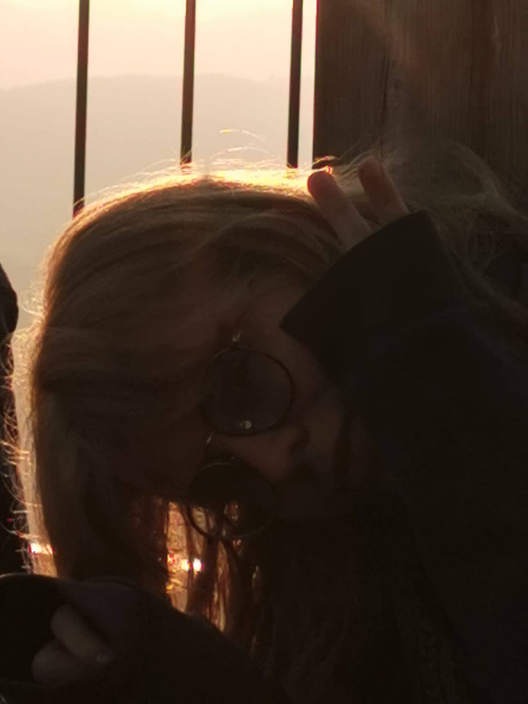

Hi, I'm Isabelle Fleury
Currently a student at the IT School (Informatikmittelschule) in Zurich.
My life-quote
If you never try, you will never know.

About Me
I'm a student at the Informatikmittelschule (IMS) in Zurich and always been passionate about
IT.
My journey in IT started as a kid with Scratch, a little cat which you can move arround with
building blocks as
a programm. My love for logical things in life, such as math or computer science, are still
present in my daily life.
I started as a kid and continued on forward with my journey.
While I was in mandatory school, I had the chance to go see the Workplace of someone on one
day a year. The "Zukunftstag".
In total I had the chance to go three times, and I've been with my dad on every chance I
had, since he is also in the IT.
Skills & Interests
Web Development
HTML, CSS, JavaScript
Design
Responsive Design, UX/UI
Tools
Git, VS Code
Languages
German, English, French
Hobbies
Reading, Video Games, Scouts
Freetime Activities
Aside from school
Aside from school Im part of scouts Vennes from Wollishofen/Leimbach in Zurich. I'm watching after kids in the age of 4 to 6 years.
Projects I'm currently working on
Currently designing and application for IOS and Android.
For this App I'm planning to get into Flutter(Dart), as for the database, its not
official yet.
The app is in progress, but to already have some feedback for this big project, I'm
currently making a website
version of this app.